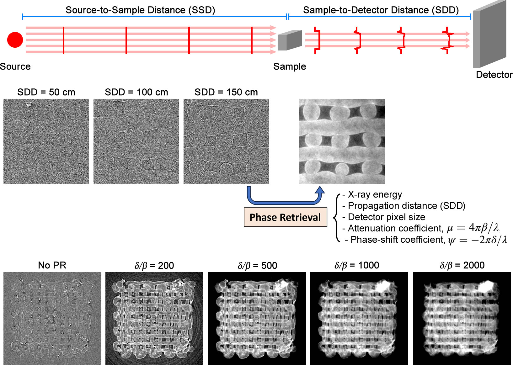
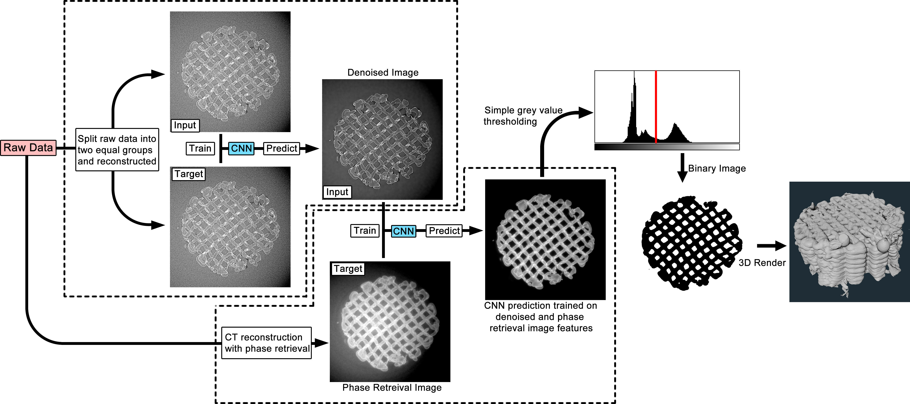
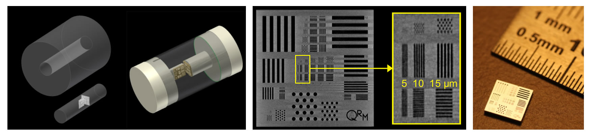
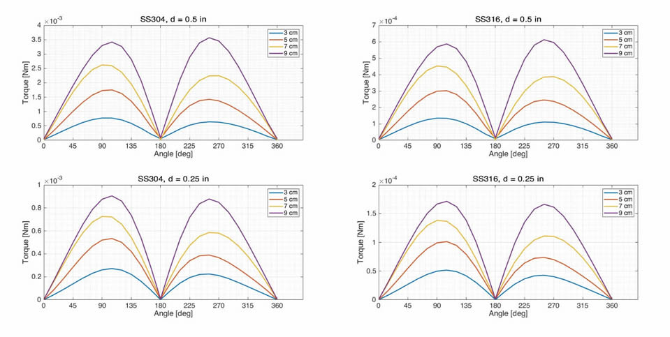
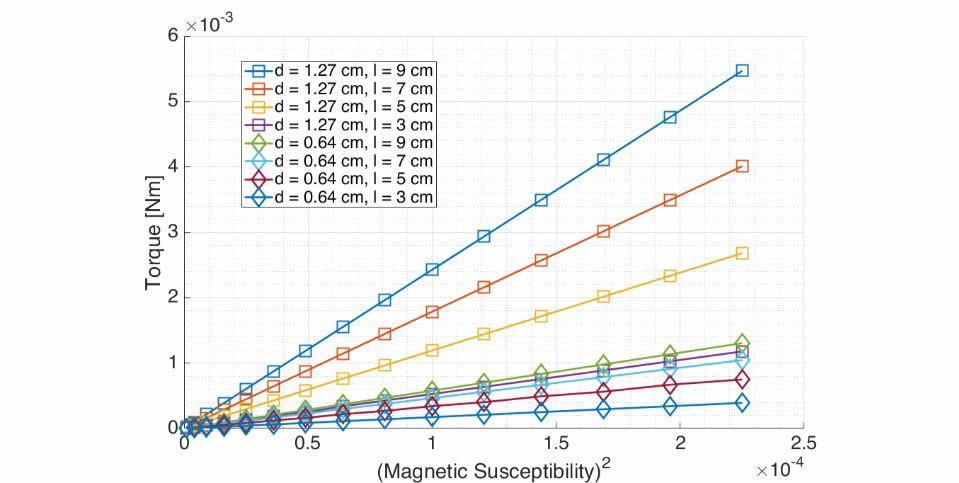

Research
University of Saskatchewan
Some of my current work at the University of Saskatchewan, includes developing image processing and post-processing technqiues using computed tomography data acquired at the Canadian Light Source.
The main imaging technique I use at the Canadian Light Source is propagation based imaging (PBI) which is also called in-line phase contrast imaging. This is the simplest method of capturing the phase shift of X-rays as they pass through a sample. This combined with computed microtomography becomes PBI-μCT. The samples that I look at are hydrogel scaffolds.
Below, the concept of PBI-μCT is illustrated. There is some attenuation, but hydrogel scaffolds are very low-density so the attenuation is not noticeable. However, the phase shift is noticeable and more importantly, the thickness of the material where the phase shift occured can be calculated.


One of the advantages of the CLS is that the photon flux is several orders of magnitude greater than a laboratory scanner. This allows CT scans can be performed faster as well. One technqiue that takes advantage of this speed is dynamic CT, scanning samples while undergoing some change.
Below are the experimental setup and the image processing strategies developed for investigating granule formation in pharmaceutical powders. The idea is that the initial moments when dry powders interact with a liquid will create unique porous structures that will affect how the granules dissolve as a pharmaceutical product.
Since the imaging technique used is dynamic CT, there has to be a balance between how reducing the sampling affects the image quality. We want to reduce the sampling so that the data acquisition speed is faster.
Although CT is fundamentally a 3D technique, we can take one slice from the volume as see the evolution over time. When the powders are very compact, the droplet slowly mixes to form a granule. But when a granule shape is mostly consolidated, the formation of pores becomes clearly visible and quantifiable.
After many tests, the best imaging paramters are known and can effectively capture the how pores form in granules during those early moments of granulation. We can track pores in different layers and unique regions of a granule.
For certain samples, CT is not possible due to the attenuation at certain angles. For example, a very thin sample may have no signal that are direcly along the lateral dimensions. But since it is thin, the sample could be scanned at an angle. This technique is called laminography.
As a test, we designed a 3D model of a QRM resolution phantom shown below. Using standard laminography parameters like a tilt angle of 30 degrees and rotating the "sample" for 360 degrees. As for optical parameters like the pixel size, we can just keep the virtual camera the same but scale the 3D model differently.


We can reconstruct our simulated laminography projections through conventional means i.e., filtered back projection or iterative reconstruction algorithm.

Now a pipeline is in place that can take a 3D model turn it into laminography projections (and tomography projections too if we assume a tilt angle of 90 degrees). We can manipulate the model to test different different parameters i.e., the tilt angle, field of view size, number of projections, or the relative pixel size. We can also look at how physical aspects such as the sample depth or the lateral dimensions affect laminographic reconstruction.


Also, with this pipeline from 3D model to simulated projections in place, we can manipulate the model for different acquisition modes i.e., moving the sample for modeling motion models.
University of Western Ontario
When I was part of the xMR Labs at Western University, I worked on medical implant safety during Magnetic Resonance Imaging. At the time, implant safety was only assessed through experimental means standardized by various organizations (ASTM, ISO, etc.). I was working on testing implant safety via a reliable computer simulation and verification through standard experiments.
I mainly did simulations in COMSOL Multiphysics (COMSOL Inc., Sweden), a finite element analysis solver. I used it to calculate the magnetostatics of geometrically simple objects rotating in a uniform static magnetic field. I started off with a sphere and infinitely long cylinder. The solutions to both cases are known so the simulated results can be verified with known analytic solutions.
On to even more cylinders. These will be machined out of stainless-steel grades 304 and 316 later for experimental verification. The two diameters used were 0.5 and 0.25 inches with lengths of 3, 5, 7, and 9 cm. The supplier of the raw material is an American company, so the rods were sold in inches but being a Canadian institution, the lengths were machined to specifications in metric.
I should mention that the whole point is to computationally find the torque induced on metal rods due to exposure to a static magnetic field. The simulated results from COMSOL are compared with experimental measurements.
Something unexpected that came up was finding the magnetic susceptibility of stainless steel.
Stainless steel rods were machined for two kinds of tests, magnetically induced deflection and rotation. I only worked on the rotation tests.
The apparatus used was designed from the ground up but followed the specifications from the ASTM International. Specifically, it was designed according to ASTM F2213-17. The experimental measurements were taken on a 3 T GE scanner.
ASTM International is the governing agency for producing standard tests. There are two main methods for measuring magnetically induced torque on medical implants. Shown below are the apparatuses for said methods, one using a low-friction spindle and another using a torsional spring. A brief study I did involved comparing the instrumental uncertainties between methods.
One may outperform the other.